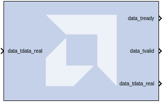
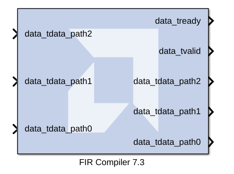

The FIR Compiler block provides users with a way to generate highly parameterizable, area-efficient, high-performance FIR filters with an AXI4-Stream-compliant interface.
This block exposes the AXI CONFIG channel as a group of separate ports based on sub-field names. The sub-field ports are described as follows:
Configuration Channel Input Signals:
| Input Signal | Description |
|---|---|
| config_tdata_fsel | A sub-field port that represents the fsel field in the Configuration Channel vector. fsel is used to select the active filter set. This port is exposed when the number of coefficient sets is greater than one. Refer to the FIR Compiler LogiCORE IP Product Guide (PG149) for an explanation of the bits in this field. |
Parameters specific to the Filter Specification tab are as follows.
Specifies the filter data and coefficient type. Choose between Real, Complex, or Real_Float. Complex coefficients are supported only on Versal devices.
Specifies the coefficient vector as a single MATLAB row vector. The number of taps is inferred from the length of the MATLAB row vector. If multiple coefficient sets are specified, then each set is appended to the previous set in the vector. It is possible to enter these coefficients using the FDATool block as well.
The number of sets of filter coefficients to be implemented. The value specified must divide without remainder into the number of coefficients.
Check to add the coefficient reload ports to the block. The set of data loaded into the reload channel will not take action until triggered by a re-configuration synchronization event. Refer to the FIR Compiler LogiCORE IP Product Guide (PG149) for a more detailed explanation of the RELOAD Channel interface timing. This block supports the xlGetReOrderedCoeff function; see Appendix A of the Vitis Model Composer User Guide (UG1483) for examples of how to use this function.
This field is applicable to Interpolation and Decimation filter types. Used to specify an Integer or Fixed_Fractional rate change.
This field is applicable to all Interpolation filter types and Decimation filter types for Fractional Rate Change implementations. The value provided in this field defines the up-sampling factor, or P for Fixed Fractional Rate (P/Q) resampling filter implementations.
This field is applicable to all Decimation and Interpolation filter types for Fractional Rate Change implementations. The value provided in this field defines the down-sampling factor, or Q for Fixed Fractional Rate (P/Q) resampling filter implementations.
Parameters specific to the Channel Specification tab are as follows.
Select Basic or Advanced. See the FIR Compiler LogiCORE IP Product Guide (PG149) for an explanation of the advanced channel specification feature.
The number of data channels to be processed by the FIR Compiler block. The multiple channel data is passed to the core in a time-multiplexed manner. A maximum of 64 channels is supported.
A comma delimited list that specifies which channel sequences are implemented.
Specifies the number of parallel data paths the filter is to process. As shown below, when more than one path is specified, the data_tdata input port is divided into sub-ports that represent each parallel path.

din sample rate.s_axis_data_tvalid port (called ND port on earlier versions of the core). With this port exposed, no input handshake abstraction and no rate-propagation takes place.Parameters specific to the Implementation tab are as follows.
Specify Signed or Unsigned.
Specifies the quantization method to be used for quantizing the coefficients. This can be set to one of the following:
Specifies the number of bits used to represent the coefficients.
When selected, the coefficient fractional width is automatically set to maximize the precision of the specified filter coefficients.
Specifies the binary point location in the coefficients datapath options.
Specifies the coefficient structure. Depending on the coefficient structure, optimizations are made in the core to reduce the amount of hardware required to implement a particular filter configuration. The selected structure can be any of the following:
The vector of coefficients specified must match the structure specified unless Inferred from coefficients is selected, in which case the structure is determined automatically from these coefficients.
Choose one of the following:
Specify the output width. Edit box activated only if the Rounding mode is set to a value other than Full_Precision.
Parameters specific to the Detailed Implementation tab are as follows.
The following two filter architectures are supported:
Note: When selecting the Transpose Multiply-Accumulate architecture, these limitations apply:
Specifies if the core is required to operate at maximum possible speed ("Speed" option) or minimum area ("Area" option). The "Area" option is the recommended default and will normally achieve the best speed and area for the design, however in certain configurations, the "Speed" setting might be required to improve performance at the expense of overall resource usage (this setting normally adds pipeline registers in critical paths).
A comma delimited list that specifies which optimizations are implemented by the block. The optimizations are as follows.
Adds additional pipeline registers on the data memory outputs to minimize fan-out. Useful when implementing large data width filters requiring multiple DSP slices per multiply-add unit.
Pipelines the pre-adder when implemented using fabric resources. This may occur when a large coefficient width is specified.
Adds additional pipeline registers on the coefficient memory outputs to minimize fan-out. Useful for parallel channels or large coefficient width filters requiring multiple DSP slices per multiply-add unit.
Adds additional pipeline registers to control logic when parallel channels have been specified.
Adds additional pipeline registers to control logic when multiple DSP columns are required to implement the filter.
Adds additional pipeline registers to control logic for fully parallel (one clock cycle per channel per input sample) symmetric filter implementations.
Pipelines the Look-up tables required to implement the control logic for advanced channel sequences.
Specifies that Block RAM READ-FIRST mode should not be used.
Multiple DSP slice columns are required for non-symmetric filter implementations.
Miscellaneous optimizations.
Note: All optimizations may be specified but are only implemented when relevant to the core configuration.
The memory type for MAC implementations can either be user-selected or chosen automatically to suit the best implementation options. Note that a choice of "Distributed" might result in a shift register implementation where appropriate to the filter structure. Forcing the RAM selection to be either Block or Distributed should be used with caution, as inappropriate use can lead to inefficient resource usage. The default Automatic mode is recommended for most applications.
Specifies the type of memory used to store data samples.
Specifies the type of memory used to store the coefficients.
Specifies the type of memory to be used to implement the data input buffer, where present.
Specifies the type of memory to be used to implement the data output buffer, where present.
Specifies the type of memory to be used to implement general storage in the datapath.
For device families with DSP slices, implementations of large high speed filters might require chaining of DSP slice elements across multiple columns. Where applicable (the feature is only enabled for multi-column devices), you can select the method of folding the filter structure across the multiple-columns, which can be Automatic (based on the selected device for the project) or Custom (you select the length of the first and subsequent columns).
Specifies the individual column lengths in a comma delimited list. See the data sheet for a more detailed explanation.
Pipeline stages are required to connect between the columns, with the level of pipelining required depending on the required system clock rate, the chosen device and other system-level parameters. The choice of this parameter is always left for you to specify.
TLAST can either be Not_Required, in which case the block will not have the port, or Vector_Framing, where TLAST is expected to denote the last sample of an interleaved cycle of data channels, or Packet_Framing, where the block does not interpret TLAST, but passes the signal to the output DATA channel TLAST with the same latency as the datapath.
This field enables the data_tready port. With this port enabled, the block will support back-pressure. Without the port, back-pressure is not supported, but resources are saved and performance is likely to be higher.
Selects a FIFO interface for the S_AXIS_DATA channel. When the FIFO has been selected, data can be transferred in a continuous burst up to the size of the FIFO (default 16) or, if greater, the number of interleaved data channels. The FIFO requires additional FPGA logic resources.
Select one of the following options for the Input and the Output.
Neither of the uses is required; the channel in question will not have a TUSER field.
In this mode, the block ignores the content of the TUSER field, but passes the content untouched from the input channel to the output channels.
In this mode, the TUSER field identifies the time-division-multiplexed channel for the transfer.
In this mode, the TUSER field will have both a user field and a chan_id field, with the chan_id field in the least significant bits. The minimal number of bits required to describe the channel will determine the width of the chan_id field, for example 7 channels will require 3 bits.
Configuration packets, when available, are consumed and their contents applied when the first sample of an interleaved data channel sequence is processed by the block. When the block is configured to process a single data channel, configuration packets are consumed every processing cycle of the block.
Further qualifies the consumption of configuration packets. Packets will only be consumed once the block has received a transaction on the s_axis_data channel where s_axis_data_tlast has been asserted.
A single coefficient set is used to process all interleaved data channels.
A unique coefficient set is specified for each interleaved data channel.
Specifies the number of coefficient sets that can be loaded in advance. Reloaded coefficients are only applied to the block once the configuration packet has been consumed (Range 1 to 256).
Active-high clock enable. Available for MAC-based FIR implementations.
Active-low synchronous clear input that always takes priority over ACLKEN. A minimum ARESETn active pulse of two cycles is required, since the signal is internally registered for performance. A pulse of one cycle resets the control and datapath of the core, but the response to the pulse is not in the cycle immediately following.
When enabled, forces the FIR output to blank during coefficient reload events to avoid transient artifacts.
Note: Blank Output can only be enabled when Reset Data Vector is disabled.
When enabled, the internal coefficient vector is reset during coefficient reload operations.
On by default. When unchecked, data_tvalid, for example, becomes m_axis_data_tvalid.
Other parameters used by this block are explained in the topic Common Options in Block Parameter Dialog Boxes.
Click on the images below to open each model.
Decimation Filter:
Interpolation Filter:
FIR Compiler LogiCORE IP Product Guide (PG149)
Copyright (C) 2026 Advanced Micro Devices, Inc.
All rights reserved.
SPDX-License-Identifier: MIT